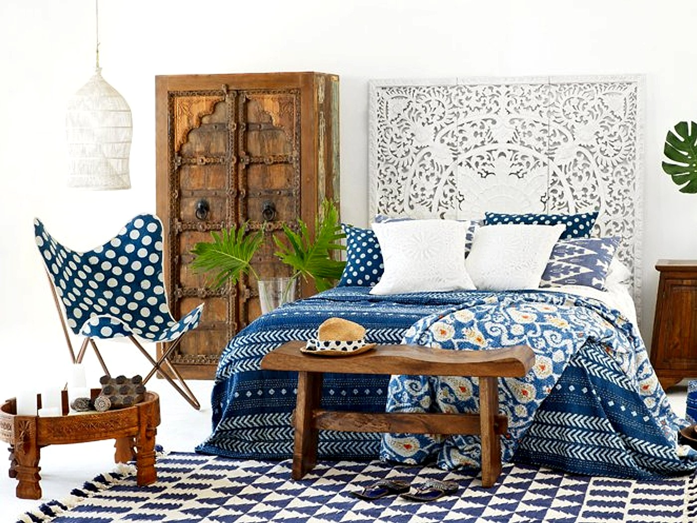
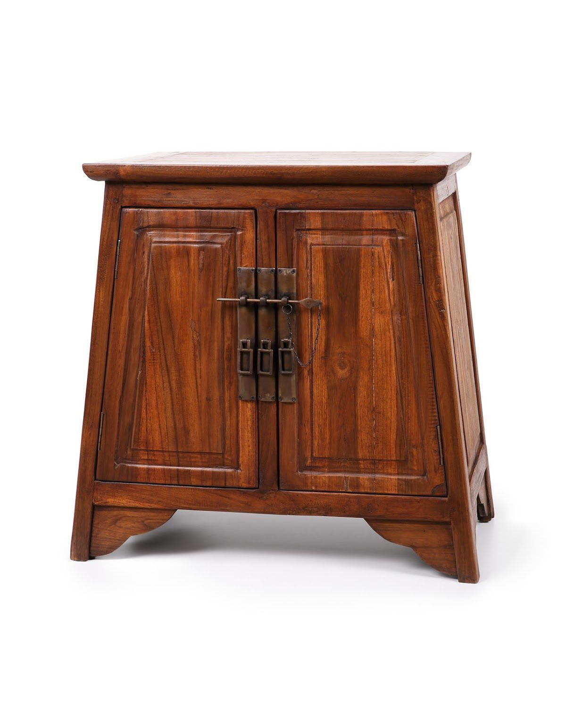
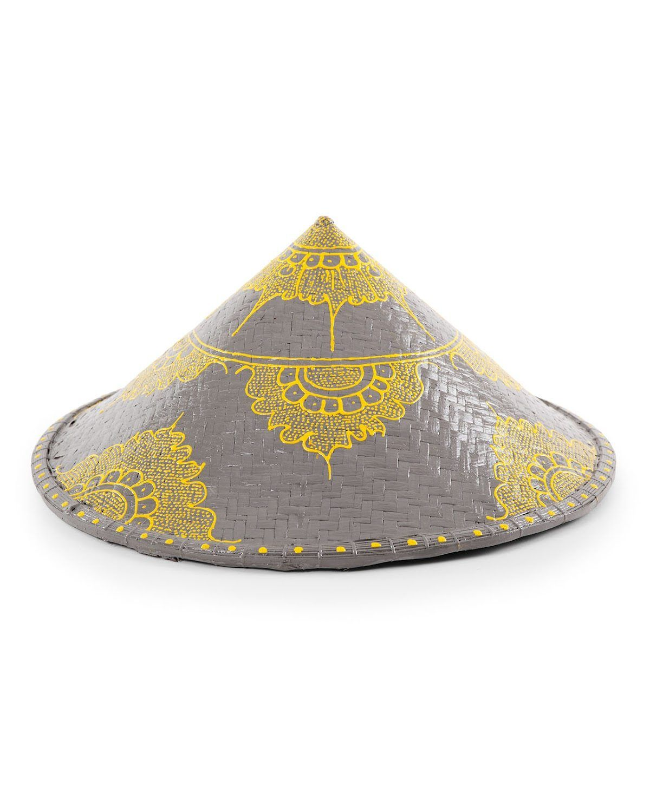
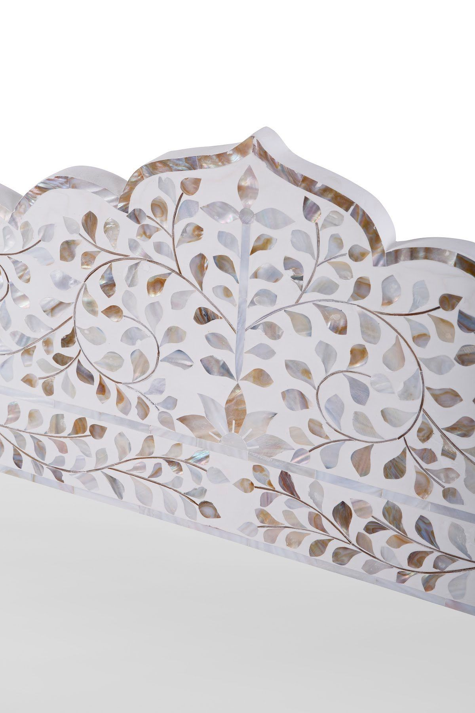
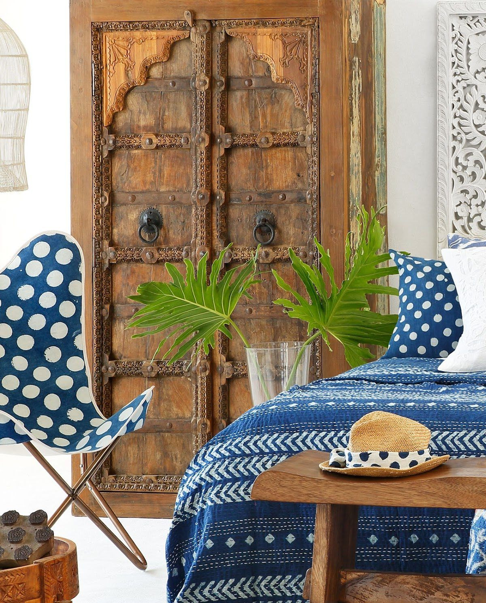

Pilgrimage Spaces brings together handcrafted furniture, decor and homeware, and textiles for people who want their homes to feel collected rather than simply filled. The range is suited to customers who are drawn to character, texture, and pieces that make a room feel layered and lived in. From statement furniture to the finishing details that soften a space, the focus is on building interiors with warmth and presence.
Our approach is rooted in artisan work and in the belief that beautiful living spaces are shaped by objects with meaning. Many of the pieces reflect traditional making techniques, natural materials, and a strong sense of hand-finished detail, creating a collection that feels soulful and distinctive. Instead of chasing short-lived trends, Pilgrimage Spaces curates pieces that can sit comfortably in a home for years and still feel personal.
When customers visit or enquire, they can expect a thoughtful, service-led experience built around helping them choose pieces that belong in their homes. We care about craftsmanship, the story behind an item, and the way furniture, textiles, and decor work together as a complete environment. That promise is simple: carefully chosen pieces, honest presentation, and a store experience shaped around beauty, practicality, and lasting appeal.

Explore a curated furniture store collection shaped around handcrafted artisan work, tactile finishes, and living spaces filled with decor, textiles, and pieces that carry story-rich character.
Our furniture collection is centred on handcrafted pieces chosen for their presence, workmanship, and distinctive finish. These are not anonymous mass-market items; they are the kinds of tables, cabinets, and statement furnishings that give a room depth and identity. Each piece is selected to bring structure, warmth, and a sense of permanence into the home.
Pilgrimage Spaces curates decor and homeware that help turn a room into a considered living space rather than just a functional one. Decorative accents, layered objects, and practical home pieces are chosen for their material richness and visual story. The result is a collection that helps customers style shelves, tables, and corners with intention.
Textiles and soft furnishings add softness, movement, and comfort to the spaces we live in every day. This collection is designed for customers who want texture as much as colour, whether they are layering a sofa, dressing a bed, or finishing a quiet reading nook. Fabric-led pieces help tie larger furniture items together and make a room feel complete.
As a furniture store, Pilgrimage Spaces is built around the experience of discovering pieces that feel collected and memorable. Customers can browse across furniture, homeware, and textiles in a way that supports the whole home, not just one isolated purchase. It is a destination for people looking for crafted detail, layered interiors, and pieces with a strong sense of place.
Here is what our clients say about us.
"Met by very passionate owners, excellent service. Pilgrimage, Elegant Furniture with a unique asian infused style, beautifully handcrafted, a fascinating story behind it, along with the hand made textiles and wonderful decorative pieces. A must have, bringing a touch of the East to your home."— Patrick Mcnamara, 5/5 Google review, ⭐⭐⭐⭐⭐
"Purchasing from Pilgrim spaces was easy and efficient and arrived carefully packaged in Johannesburg. I would definitely buy again and recommend to family and friends."— Pashnee Naicker, 5/5 Google review, ⭐⭐⭐⭐⭐
"We had the privilege of photographing some of the beautiful furniture and homeware from Pilgrimage Spaces. Truly unique pieces hand crafted by master artisans."— Natalie Boruvka, 5/5 Google review, ⭐⭐⭐⭐⭐




We'd love to hear from you — reach out to us anytime.